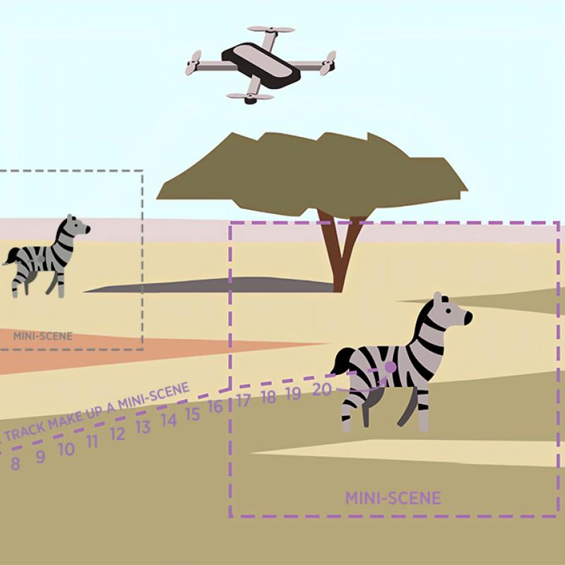
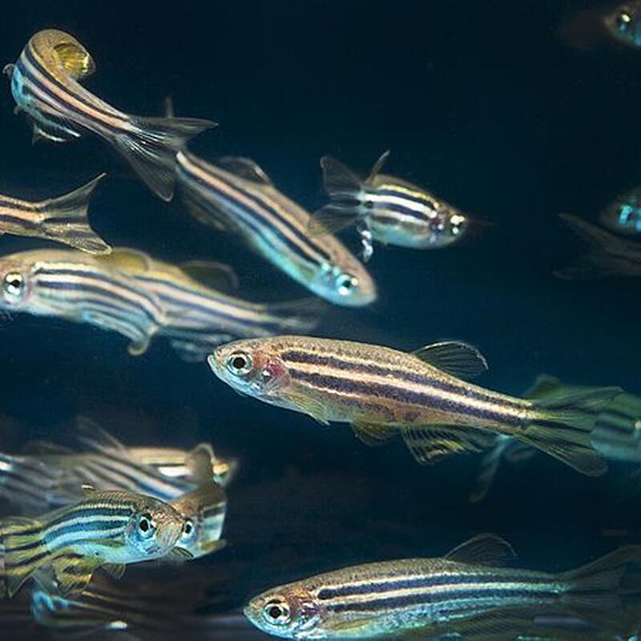
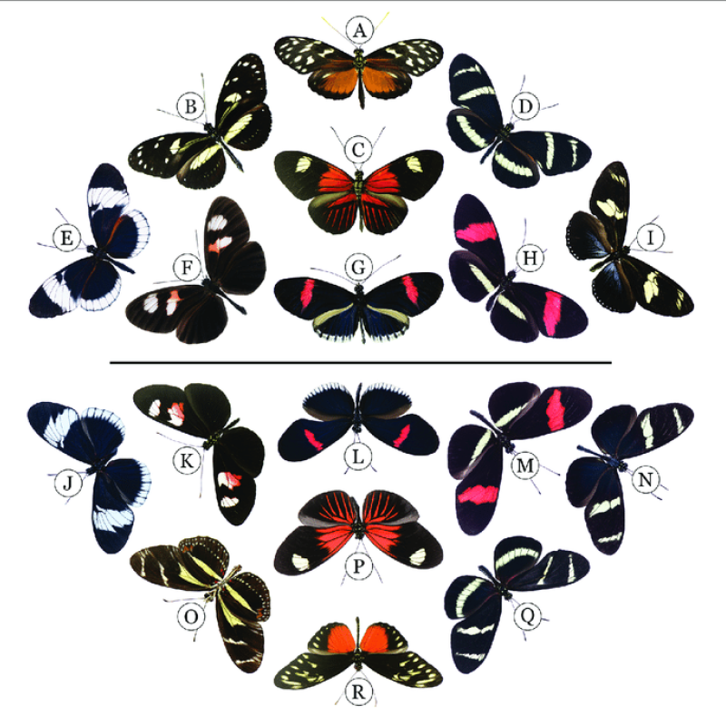
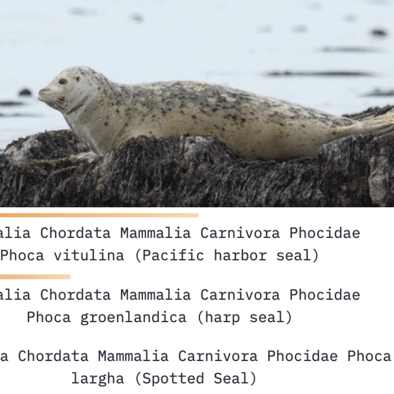
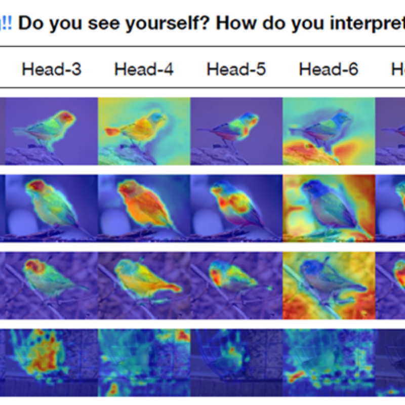
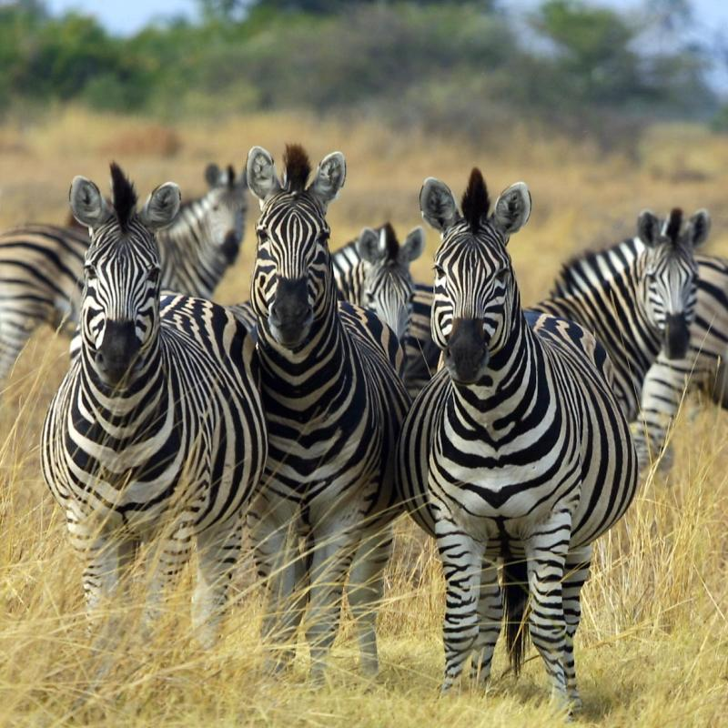
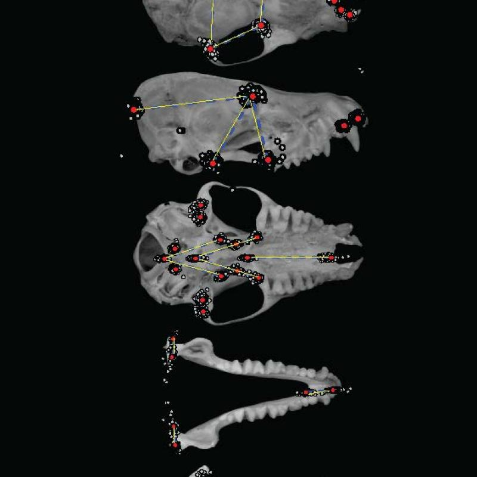

Current & Past Projects

Fishes

Heliconius wing patterns

Imageomics Foundation Model

Interpretable and Explainable Models

Patterns2Genes
Macroevolution

3D Morphometrics
Team A. Murat Maga, Sara Rolfe, Chi Zhang